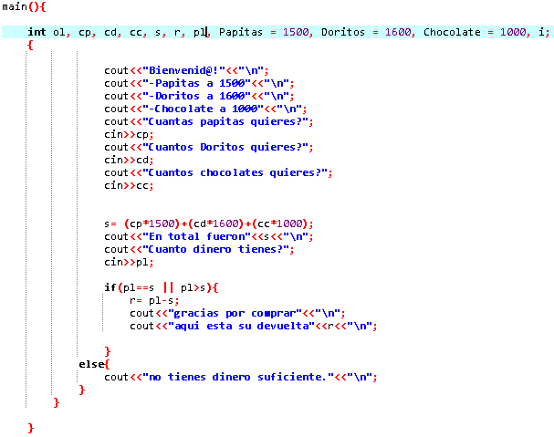

AQUÍ ESTÁ EL PARCIAL

Con el parcial al principio me sentí bastante perdido, pero a medida que lo iba haciendo ya iba con mas fluidez, la verdad la actividad me gustó bastante ya que esto nos hace recordar mucho.